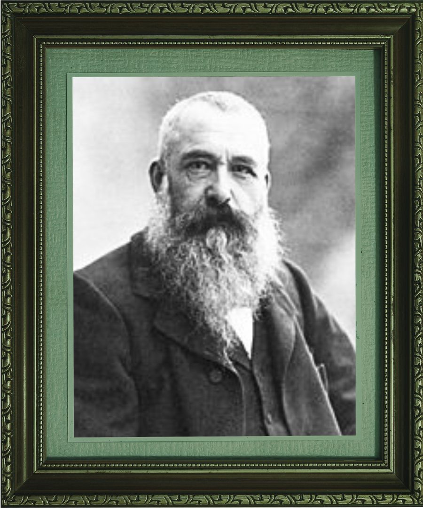

Oscar-Claude Monet (Paris, 14 de novembro de 1840 — Giverny, 5 de dezembro de 1926)
foi um pintor francês e o mais célebre entre os pintores impressionistas.
Estudo na arte the roses 1926\. vista do mar ao por do sol 1862
Decepcionado com o ensino da pintura acadêmica na Universidade, em 1862,
ele foi estudar artes com Charles Gleyer em Paris, onde conheceu Camille Pissarro e
Gustave Courbet. Juntos desenvolveram a técnica de pintar o efeito das luzes com rápidas
inceladas, o que mais tarde seria conhecido como Impressionismo.
Carreira artística
Em 1863, ajudado por seu amigo, Monet alugou um pequeno estúdio em Paris. No mesmo ano,
Monet entraria para o Salão oficial de pintura de Paris: "Estuário do Sena" e "Ponte sobre
Hève na Vazante". No ano seguinte, Monet novamente expôs duas telas no salão de Paris:
"Camille" ou "O vestido verde" e "A floresta em Fontainebleu". A tela "O vestido verde"
recebeu grandes elogios por parte dos críticos e ganhou um prêmio no salão de Paris. Em
"Camille", Monet retratou Camille Doncieux, que se tornaria sua futura mulher. No ano de
1867, Monet tentou inscrever a obra "Mulheres no Jardim" no Salão, que não a aceitou. A
tela era tão grande que ele construiu uma vala para poder enterrar a parte inferior e atingir
a parte superior da tela ao pintar.